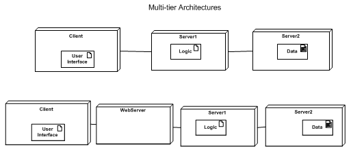

The quizzes, your project, these notes, the book.
As for the skills I'll be testing for, see
[ final.objectives.html ]
Make sure you know the language: Both the jargon of this course and the Unified Modelling Language.
In the text book focus on the 4 pages at the front and back ... they distil 80-90% of it
into 4 sheets.
Which Grasp or GOF pattern do you tink are the most valuable or useful for up and coming programmers?
The GRASP patterns/principles are vital.... you need to have them in your blood so that you
don't have to think about them while producing sustaiable code. You may have to use the names
to explain what your doing.
I'm not so sure about the GoF patterns. But they are ideal for Job interviews and
final exams!
I am still having some trouble sorting out the information on layers.
Rule 1: package up classes by function: User Interface + Domain + Services. Like a layer cake.
Rule 2: In complex programs add more sub packages and more layers.
Rule 3: Steal good architectures.
Rule 4: High cohesion within a package and low couplings between packages.
It's mentioned that there is no official UML convention when showing an iteration. Should we just stick with what's shown on figure 15.32?
Yes.
My personal convention is based on math
Loop / [ variable : set ]
(in a sequence diagram)
* [ variable : set ]
(in either diagram).
The set is often expressed like this
role.role.role.role....
or
attribute
In the code these tend to become
getRole()->getRole()->....
For instance, in a method of the Order class I might have
* [ i : lineItem ]
meaning, visit every line Item for this Order. It might lead to code like this, in C++,
for(list<LineItem>::iterator i = lineItem.begin(); i != lineItem.end(); i++)
Is a qualified Association an instance of a Singleton class?
No.
A qualified association is the UML equivalent of an array or map. It shows that
if you know the index or key value then you can find the unique associated object.
Examples
[ ch05lev1sec9 ]
(UML Distilled)
[ ch27lev1sec8 ]
(Larman).
Exercise: Draw a UML class diagram that states
Net
- Credit card Bills have lots of Purchases.
- Each Purchase on a Credit Card Bill has a Sequence Number.
- If we knoew the Sequence Number and the bill then we know the precise Purchase.
(End of Net)
Notice that the association picks one object out of the other class of objects. So this class
can not be a singleton -- Why?
Exercise: what is "Singleton"?
Although we did not go into full details on the UML activity Diagrams, can activity and state diagrams be used across all disciplines?
Yes.... and in all phases.... and, indeed before you start developing the software.
Flowcharts have been a tool for describing procedures and algorithms for many years.
When used as the only tool in software design they tend to producecode that is hard to maintain.
It has low cohesion modules and high coupling (typically global variables) between modules.
So I've chosen to not teach them in this class..... They are in CSCI372.
However you do need to know the symbols used!
[ 17.html#Dynamics -- Chapter 28 and 29 ]
Is UML and the UP more frequently used by Systems Analysts or is it a
universal tool used on many projects by computer scientists? I am curious
how commonly this is used in ones IT profession. It seems extremely
powerful and likely to be used more on large scale projects.
I monitor the literature and local industries.... There is a gigantic tendency for
businesses to have no process and no one method. This is something we discuss in CSCI372.
It has consequences.
On the other hand parts of the UML seem to be picking up nicely.
The take-away lesson: One size does not fit all. You must tune your methods, proceses,
organization, and process to the situation in hand.
I am suffering from a bad case of finals panic. Can you recommend a good strategy for the notes? Can I have yours?
First -- take a several very deep slow breaths and then think of your
favorite place to relax .... just what the surgeon said before he cut several
things of my face..... The final should be better than that.
My notes are on the web. Use any of them you like.
Strategy: go back over the quizzes and projects. Use the Search
on the web site to fill in holes. Try to boil it all down to a single
double sided set of notes.
Turn up, on time, with several sharp pencils and some erasers.
A design class diagram is which one again? That is what will happen on the
final. We have 1000 diagrams to remember and not just know how to do them
but know when to do which one and which one that is.... HELP
The design class diagram is the last thing before you write code. It
describes the design of the software. It is a picture of the classes
that are programmed. It is often a single summary of all the interactions,
etc. Basically, there is one DCD for each elementary package.
Domain class diagram->use case->scenario->SSD->interaction->design class diagram->code.
Design class diagrams have three sections, the top is for the title. Which is for the attributes and what is the third one for specifically?
- name -- may have stereotypes and constraints
- attributes (optional)
- operations (optional) -- must have parentheses! -- may have data
- Other (personal or organizational)
In the name of reviews is there anyway we can get a run down of all the diagrams to date that are importation for the final and the ones that we will likely encounter in real life?
i.e. = [Picture] concept, upsides, downsides
In real life buy a copy of Martin Fowler's "UML Distilled".
For this class look inside the back and front covers of the book.
On page 250 and inside the back cover we have a complete set of
example notations used in all class diagrams.
Or check out my notes and links on the UML
[ ../samples/uml.html ]
(some diagrams seem to have vanished however:-( )
As there are a large number of arrow types in the UML, could you go over the main ones we should know lest we be marked down on the final? (Was the quiz the last we saw of lollipops?)
In class diagrams we have
[ Be careful to use arrows correctly in the UML in 11 ]
In interaction diagrams we have
- Message plus data --
- Returned data
Can you list the main topics that will be tested on the final?
or go over them in class
[ mock.html ]
How about Tic-tac-toe
[ mock.pdf ]
Other examples I can do in class: Burgers'RUs and the CSUSB Inventory.
There is a Design Model on the inside cover of the book, another on pg 132 and another on pg 251. They all look different. Can you explain why and which type do you want to see on the final?
They show how different artifacts fit together.
The one on page 132 omits the DCD and focuses on the way we borrow
ideas from the domain to classify objects inside our design ... communicating
objects.
Page 251 shows how a particular sample DCD differs from the Domain model.
We shift from ideas about the real world to drawings of the software.
Inside the front cover their is a summary of the links from Domain to
use case, to SSD, to interactions, to a DCD.
Could you go over why and when we use the GRASP patterns?
When you know that your software must do and you want to
place these responsibilities with the best classes in your design
to make a maintainable and extensible piece of code.
Example -- which class in a Tic-tac-toe program should find out
if X has won the game?
Can you go over GRASP patterns again?
Can you list all nine GRASP patterns without following the next
link:
[ 16answer.html ]
Can you give an example of GRASP patterns?
TBD
Can you run through the Gang of Four patterns?
Could you list the most important GoF Patterns we will need to know for the
Final. There is no nice summary like for the GRASP Patterns.
Look on this web site
[ 17.html#26 Applying GoF -- Adapter Factory Singleton Strategy Composite Observer ]
I did not really get the Question 7 of the mock exam, could you give me an example?
Can you go over the GoF? What part should we concentrate more on for the final?
You need to be able to draw diagrams of the patterns and describe the
classes using text. Also explain how GRASP ideas appear in it.
Exercise -- pick one and diagram it:
- Adapter
- Factory
- Singleton
- Strategy
- Composite
- Observer
- Facade
More in
[ GoF Patterns in patterns ]
I would like you to go over Logical Architecture and Packages again because I'm not crystal clear on it.
Logical architecture is how you organize your thinking, documents, and code
as you develop it. In the UML we use a package diagram plus some classes
to show our organization.
Distinguish from the physical architecture -- hardware and software as
delivered to the client -- UML deployment diagram.
Can you show us an example of Logical Architecture and Packages?
In this class it is always the same logical architecture:
- User Interface
- Domain Layer
- Technical Services
Exercise: draw the diagram. Add the dependencies. CHECK the arrows!
I was interested in packages after I read some things about it I started
searching Online for detailed information. Just to clarify, on a large
scale project packages would be something that is very very handy in
sorting out like classes etc.. so would this be something used a lot in
practice or not so much?
It is a way of organizing your thinking and work as you develop software.
In UML a collection of packages with some dependencies.
Any large project (more than a dozen classes?) needs it.
More in
[ 09q.html ]
Can you give me an example of Planning and Process?
TBD
Can you break down the RUP and summarize in which process all the diagrams
we've done in this course belong to
Four phases: ____________________.
Phases are one or more iterations. An Iteration takes one set
of requirements, analyzes them, designs solution, codes them, and
tests the result.
Several Disciplines: _______________________________.
In any phase we may be using any discipline but the mix of disciplines
depends on where we are in the project.
Diagram of Phases and disciplines.
An early quiz....
Software Architecture Documentation seems to be a pretty broad idea. I was looking it up and it seems something that is very useful to follow. How useful is it in terms of a real project?
I'm attracted to the idea but find it a little too much paperwork.
So we won't cover it in this course.
If you need to know about it go to
[ architecture.html ]
my notes.
Can you please review GRASP patterns?
Good idea:
Can you list all nine GRASP patterns without following the next
link:
[ 16answer.html ]
What is a business case? Question has been asked before, but the answer doesn't make enough sense to me.
A Business Case explains why the enterprise should go to the bother
of doing a software project.
Don't confuse with a "Business Use Case" which is how some profitable
activity is carried out with the new system.
If UML diagrams are being used more in programming why is it not a required course for BS major?
When we redesigned the BS to include objects and the UML we opted to
distribute it across the curriculum -- in particular in CS201,202,320, 330,
and 455. We were at the limit of the number of units for a BS and
so couldn't add a new course. We also believed that it was better to see it
many times in different contexts rather than have it as
a specialized topic.
It is suppose to be high cohesion and low coupling right? I was never too clear on why that was desired..
Yes. Avoid putting things together unless they are related.
Try this analogy: you organize a book at random into chapters...
or do you do it by topic?
How do you put documents in a filing cabinet? at random or so that
closely linked documents are near by?
Similarly: books in a library or crockery in a kitchen.
Notice -- in mechanical and electrical engineering things that are coupled
have to be close together to be coupled. Only in software can we get away
with putting coupled things far apart...
in a web application, would class helpers be considered a subset of the using class?
Probably not. Mostly they seem to be associated
with the class that uses them and a subset of a different class entirely.
In other words the using class will contain an object that is an instance
of the helper class.
For example MyClass uses a HelperClass:
[ helper.png ]
go we go over in more detail why each relationship is important or not so much
This is part of Data Base theory and practice.
It is (sadly) not part of this course, this quarter -- YAGNI.
We did something on it in CSci372....
In the chapter 39 the author talks about (SAD) Software Architecture Documentation. How do you know when to implement this procedure?
In a real project with some show stopping non-functional requirements.
Or even when there are important non-functional requirements.
Note: I find Larman's Technical Memo a rather cumbersome tool: it will
find better solutions but takes more effort to do.
can you explain three-tier architecture a little more.
Three computers connected by a network. One handles the web pages,
one handles the business logic, one handles the data base. Like
the bottom image below

are there more views that can be useful besides the eight mentioned? If so, what are they?
Personal: 8 views is quite enough to go on with!
Online, start with my web page
[ patterns.html ]
and follow the links on it to various "Wikis".
Try using them...
From the library borrow The GoF book -- and plan to spend several weeks
studying it. There are also some theses and MS Reports on patterns!
Go to Barnes and Noble or Borders and browse the Software Development
section looking for "Pattern" in the title of the book.
Try Amazon.Com.
When working in a team of developers -- create your own repository
of patterns that the team likes to use.
What are some different types of stakeholders that can be found in a project?
Excellent question... One model places them in shells away from the
software: developers, users, people interacting with users, ...
On the web I found
[ article.asp?p=30162&seqNum=2&rl=1 ]
Class discussion.